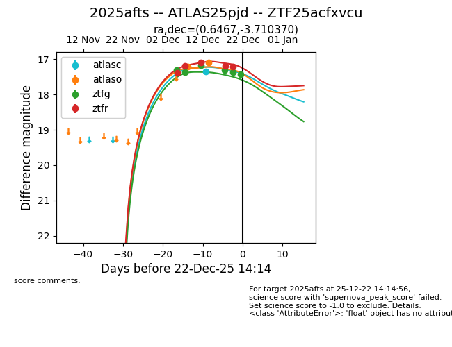
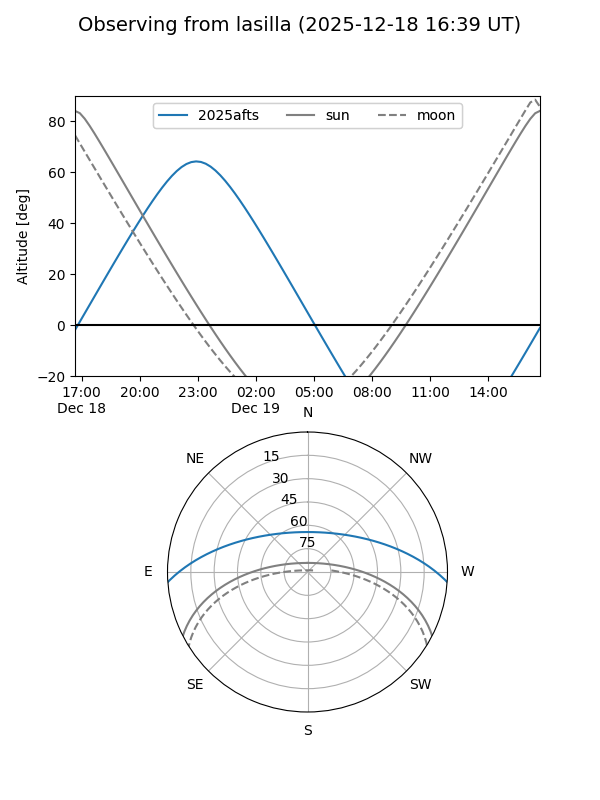
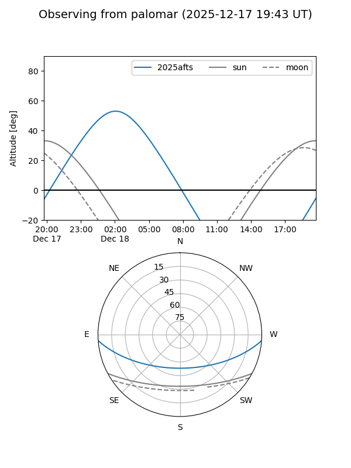
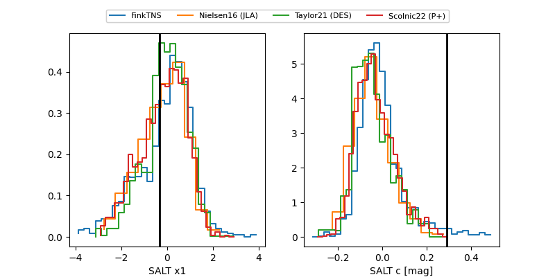

2025afts
Target 2025afts at 2025-12-22 14:16
Aliases and brokers:
FINK: fink-portal.org/ZTF25acfxvcu
Lasair: lasair-ztf.lsst.ac.uk/objects/ZTF25acfxvcu
ALeRCE: alerce.online/object/ZTF25acfxvcu
TNS: wis-tns.org/object/2025afts
YSE: ziggy.ucolick.org/yse/transient_detail/2025afts
alt names
ZTF25acfxvcu (ztf,fink_ztf)
2025afts (tns,yse)
ATLAS25pjd (atlas)
Coordinates:
equatorial (ra, dec) = 0.6467,-3.71037
equatorial (HMS+DMS) = 00:02:35.20,-03:42:37.33
galactic (l, b) = (94.3289,-63.83543)
Flags:
Photometry:
last atlasc=17.34, atlaso=17.10, ztfg=17.42, ztfr=17.21
1 atlasc, 2 atlaso, 6 ztfg, 5 ztfr detections
Lightcurve

Visibility


Additional plots
